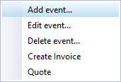
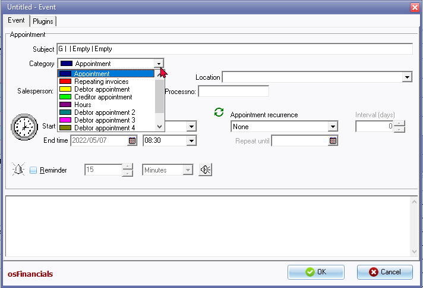

Create / Add events (Appointments)
In osFinancials, the Calendar feature offers the flexibility to schedule and create various types of events or appointments. You can schedule or add events in the following The Calendar feature offers the flexibility to schedule and create various types of events or appointments. You can schedule or add events in the following categories:
- Appointment (General): This category allows you to schedule general appointments, such as meetings with a bank manager or lunches with clients or colleagues.
- Repeating invoices: If you have recurring invoices that need to be processed or copied regularly, you can schedule them as repeating invoices. This feature simplifies the task of generating invoices for repetitive transactions.
- Hours: This category allows you to schedule services rendered on an hourly basis. Once the hours are scheduled, you have the option to generate Quotes based on the scheduled hours. These Quotes can be edited if necessary to ensure accuracy. After finalizing the Quotes, you can convert them into Invoices.
- Debtors appointment: You have the ability to schedule up to six different categories of appointments with debtors (customers/clients). These categories can be customized based on your specific needs and can include appointments for specials, accounts, or any other relevant category. Moreover, you can create quotes and invoices directly from these debtor appointments, streamlining your quotations and invoicing processes.
- Creditors appointment: This category allows you to schedule appointments with creditors (suppliers/vendors). You can use this feature to keep track of important meetings or discussions with your suppliers regarding orders, accounts, or any other related matters.
By leveraging these features in the Calendar, you can effectively manage and track various types of appointments, schedule repeating invoices, and create invoices for debtor appointments, all within osFinancials.
|
|
The Calendar feature utilises colour coding to visually distinguish between different categories of events. This makes it easier to identify and differentiate the types of events when they are displayed on the Calendar. The colour-coded system helps you quickly recognise and navigate through your scheduled events, improving efficiency and organisation. |

To add (create) events or appointments:
- Select a suitable time on the day-time view of the agenda and right-click. The following context menu is displayed:
- Add event - Select this option to create a new event. You can choose the category of the event, select the salesperson associated with the event, and provide all the necessary details such as description, start and end time, reminders, appointment recurrence, location, select a default stock item or product for the event, add notes, and any other relevant information.
- Edit event - If you have already created an event, you can select it and choose the "Edit event" option to modify its details. This allows you to make changes such as updating the title, salesperson, adjusting the time, rescheduling the event, change the appointment recurrence, setting or removing reminders, selecting a default stock item or product, adding notes, or updating any other information associated with the event.
- Delete event - This option allows you to delete a selected event. If you want to remove a previously created event, select it and choose the "Delete event" option from the context menu. You will be prompted to confirm the deletion before the event is permanently removed.
- Create invoice - By selecting this option, you can generate an invoice for a selected debtor (customer/client) account directly from the event. This simplifies the invoicing process by automatically populating the invoice with the relevant details from the event.
- Create quote - If you need to create a quote for a selected debtor (customer/client) account, you can select this option. It enables you to generate a quote based on the information provided in the event. The quote can be further customized, finalized, and sent to the customer for review.
|
|
Change to Agenda - option may be available on the context menu. Multi-User calendar (agenda) - Manual - Shop - Licence : Once-off - This plugin adds the multi-user agenda (multiple agendas) to the Calendar (Planner). You can add agendas and link them as default to the current user. For every agenda a tab will appear in the agenda Calendar so you can see what the appointments, etc. are on other agendas. You can have a agenda for each employee, salesperson, user, etc. and create invoices directly from his / her agenda with a simple click. Each agenda has it's own calendar and task list. |

These options in the context menu of the Calendar provide convenient ways to add, edit, delete events or appointments, as well as create invoices or quotes directly from the agenda in osFinancials.
- To create a new event, select the "Add event" option. The "Untitled - Event" screen is displayed:
 - Enter the subject (topic) of the appointment.
- Select the category (i.e. Appointment, Repeating invoices, Debtors appointment (up to six (6) categories) or Creditors appointment).
- Set the "Start time" and "End time" for the appointment. The selected time, when the "Add event" option was launched, will be displayed.
|
|
If you wish to mark this event as an all day event, select the "All day event" option. You are then not able to set the start and the end date. |

- Select the appointment recurrence (i.e. "None" (default), "Daily, Weekly, Monthly by day, Monthly by date, Yearly by day, Yearly by date" or "Custom").
|
|
If "Custom" is selected, you may set the interval in the number of days. |
|
|
If the Recurrence is set to any other value than "None", the Repeat until date will be displayed for one calendar year, e.g. 07/05/2022 if the start date is 07/05/2023. You may then select a date until, which the event or appointment is to be repeated. |
- Select the Reminder option if you need to be reminded of the event or appointment.
|
|
This will remind you of a scheduled event or task well in advance (from any number of minutes, hours and even days) until the event or appointment is deleted. |
- Enter any additional information or notes about the appointment. This will also be displayed when you edit the event or when the Reminder is displayed.
- Click on the OK button to save the event or appointment.